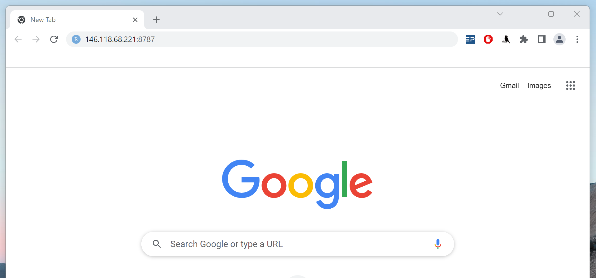
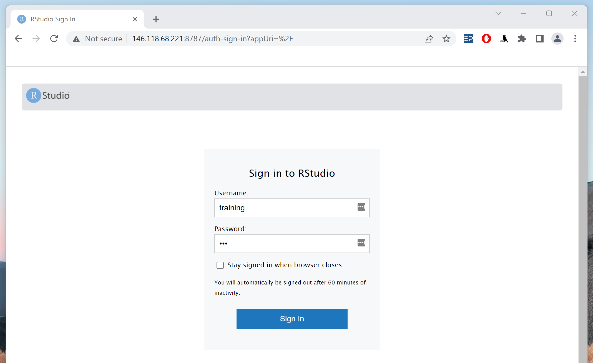
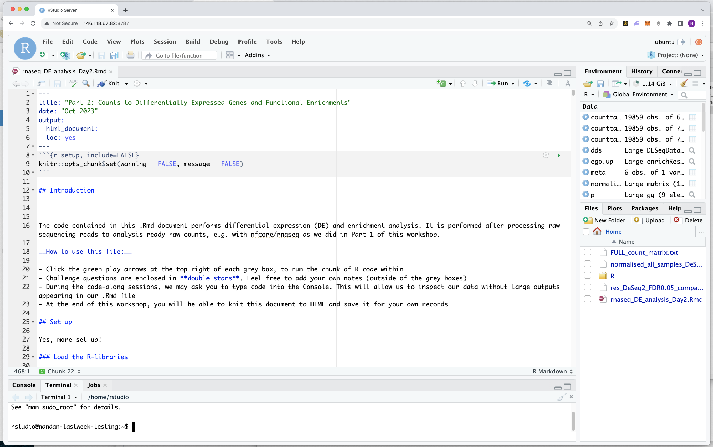

Set up R/RStudio for downstream analyses
- Execute an RStudio container using Singularity
- Learn how to import a multi-sample gene count matrix into RStudio using R code
2.1.1 What is R and RStudio?
R is a programming language for statistical computing and graphics. It is one of the most widely-used programming languages used in data science. R is a particularly great option when we’re working with a variety of statistical tools (e.g. RNA-Seq, population genomics, etc.) and want to create publication-quality graphs and figures. Multiple independant packages/libraries have been developed in R-programming, which can be used for performing various kinds of ‘omics’ analysis. RStudio is a development environment which can be used to write and excecute R code.
Using R/RStudio for differential expression analysis
We’ll be using the raw gene count matrix output by the nf-core/rnaseq pipline to perform statistical analyses and determine differentially expressed (DE) genes and pathways. As we’re working with R/RStudio, we’ll be using a number of different R packages to evaluate, analyse and visualise our data. A number of R packages have been developed specifically to identify differencially expressed (DE) genes, today we’re using the DESeq2 package.
We’ve created a Singularity container that houses R/Rstudio with all the libraries we’ll be using today already pre-installed. We’ll be using that container to run RStudio on Nimbus.
2.1.2 Run the RStudio container on Nimbus
While you may be familiar with RStudio as a desktop application, it also available as a remote server on Nimbus. Launching an RStudio server from Nimbus allows us to run RStudio from a web browser and it means we don’t have to download the desktop application to our own computers.
To run RStudio in a web browser, we first need to return to our Nimbus instances and run the RStudio server command. Log into Nimbus, same as you did for Day 1.
Pawsey have created a ‘bio image’ specifically for Nimbus that caters to bioinformatics users who prefer to have their instances set up with popular bioinformatic tools. You can learn more about it here. We’ve been using this bio image for the workshop, as it has Nextflow and Singularity pre-installed for us 😊.
➤ On your Nimbus instance, create a temporary RStudio server directory by running:
mkdir -p /tmp/rstudio-serverWe’re then going to run a Singularity command to execute the prepared RStudio container containing all the libraries. This command looks a bit intimidating, but all you really need to know to get it working is:
- We’ve set a unique password (
PASSWORD='abc') that we’ll use to log into the RStudio server on our web browsers - We are using Singularity to execute (
singularity exec) the prepared RStudio container (/cvmfs/containers.biocommons.aarnet.edu.au/r/n/rnaseq_rstudio.sif) - Containers are closed environments, so we have to explicitly bind (
-B) or expose directories that we want it to access on our machine.
➤ To start the Rserver, run:
PASSWORD='abc' singularity exec \
-B /tmp/rstudio-server:/var/lib/rstudio-server \
-B /tmp/rstudio-server:/var/run/rstudio-server \
-B /home/ubuntu/working_directory/Day-2:/home \
rstudio_4.1.0.wCP.sif \
rserver --auth-none=0 --auth-pam-helper-path=pam-helper --server-user ubuntuOnce you paste the above command in the terminal and press Enter, the terminal SHOULD NOT return anything. If this happens, we are good to go!
You can also run the above command using the screen utility, as we did yesterday.
Open RStudio in a web browser
➤ Open up a web browser on your local machine. Remember, you will need to use Chrome or Safari for this. Participants using Firefox may experience technical issues.
Type 146.118.XX.XX:8787 in your browser where the XX.XX will be replaced by your IP specific digits:

When the RServer interface launches, sign in to RStudio. Enter ‘training’ in the username text box and ‘abc’ in the password text box:

If you need to end your session, exit your browser and on Nimbus, run the following command:
lsof -ti:8787 | xargs kill -92.1.3 Working in RStudio
Open the analysis file
➤ In RStudio, go to File > Open File … > Day_2 > rnaseq_DE_analysis_Day2.Rmd.
You should have something similar to what’s in the image below. We will be running our analysis from this file.

Using R/Rstudio and Rmarkdown
For this part of the workshop, we will be writing and running code in an R Markdown (.Rmd) file format. R Markdown combines R code (analysis) with Markdown code (yes - another language!). This will allow us to run code in chunks. At the end of our analysis, we will create a nice HTML report containing our results and commentary.
R Markdown is very simple - all you need to know for now is:
- The grey blocks contain R code, run the code by clicking the green arrow ▶️ on the top right. * Within the code blocks:
- Comment lines begin with “#”, bullet points begin with “-”
- Run code blocks in sequential order
- Pretty much everything else outside these boxes is Markdown format. This is mainly instructions or an explanation of the R code blocks that follow:
- Feel free to add your own notes and save a copy of this file
For more details on using R Markdown see here.
This webpage will contain the same R code as is in rnaseq_DE_analysis_Day2.Rmd. You are welcome to use and modify this webpage’s code for your own future experiments, but during today, we will be working from RStudio and the .Rmd file only.
2.1.4 Prepare your R environment
Before we begin, we need to load our libraries and set our working directory to make sure all the files we need are in the right place.
Load libraries
➤ Click the green arrow in the top right of the R grey code box to run the code chunk. This will load libraries required for this analysis.
suppressMessages({
library("DESeq2")
library("edgeR")
library("limma")
library("RColorBrewer")
library("gplots")
library("ggplot2")
library("factoextra")
library("devtools")
library("rstudioapi")
library("dplyr")
library("tibble")
library("tidyverse")
library("pheatmap")
library("biomaRt")
library("annotables")
library("org.Mm.eg.db")
library("biobroom")
library("clusterProfiler")
library("ggnewscale")
})Import the count matrix file
The count matrix file contains raw (un-normalized) counts for every gene (rows) in mm10 and every sample (columns). The value in the i-th row and the j-th column of the matrix tells how many raw reads were assigned to gene i in sample j.
We created a count matrix file with subset data in Part 1 of this workshop (salmon.merged.gene_counts.tsv). In Part 2, we will use a count matrix file produced from the full dataset, in order to have enough data to generate differential pathways.
# Read in the full count matrix file
counttable_original<-read.delim("FULL_count_matrix.txt",
header=T,
row.names=1)
# Data format is very important to ensure that functions read and analyse data correctly!
# The loaded count matrix is not in the exact format as required by the functions used later in the analysis
# So we perform the following steps
# Put gene symbol in the first column
counttable <- counttable_original[,c("Symbol","WT1","WT2","WT3","KO1","KO2","KO3")]
# We don't need the ensembl IDs - get rid of the rownames
row.names(counttable) <- NULL
# Make the gene symbol column rownames instead
rownames(counttable) <- counttable$Symbol
counttable <- counttable[,c("WT1","WT2","WT3","KO1","KO2","KO3")]
# View the count table with the code below
View(counttable)We now have our count matrix file (genes - rows, samples - columns) ready for analysis.
2.1.5 Experimental design metadata
DE requires some metadata that tells our R libraries about the experimental design of the study, so that it knows how to handle the data. In this analysis, we have two experimental groups, the wildtype (“Wild”) and the knockout (“KO”) groups.
We will create and store this metadata in a specific format required by the R libraries that we will use later. The samples are in rows (sample IDs as rownames), and columns are the experimental groupings. You can have more than one column, but need a minimum of one that describes your experimental groups.
# Define a condition variable, ensuring they match the order of sample IDs in counttable
condition = c("Wild","Wild","Wild","KO","KO","KO")
# Create a dataframe called meta with condition and sample IDs as rownames (taken from counttable)
meta <- data.frame(row.names = colnames(counttable), condition)
# View the meta dataframe with the code below
View(meta)- Using the RStudio server allows us to stay on the command line where all our files are, rather than download them to our desktops.